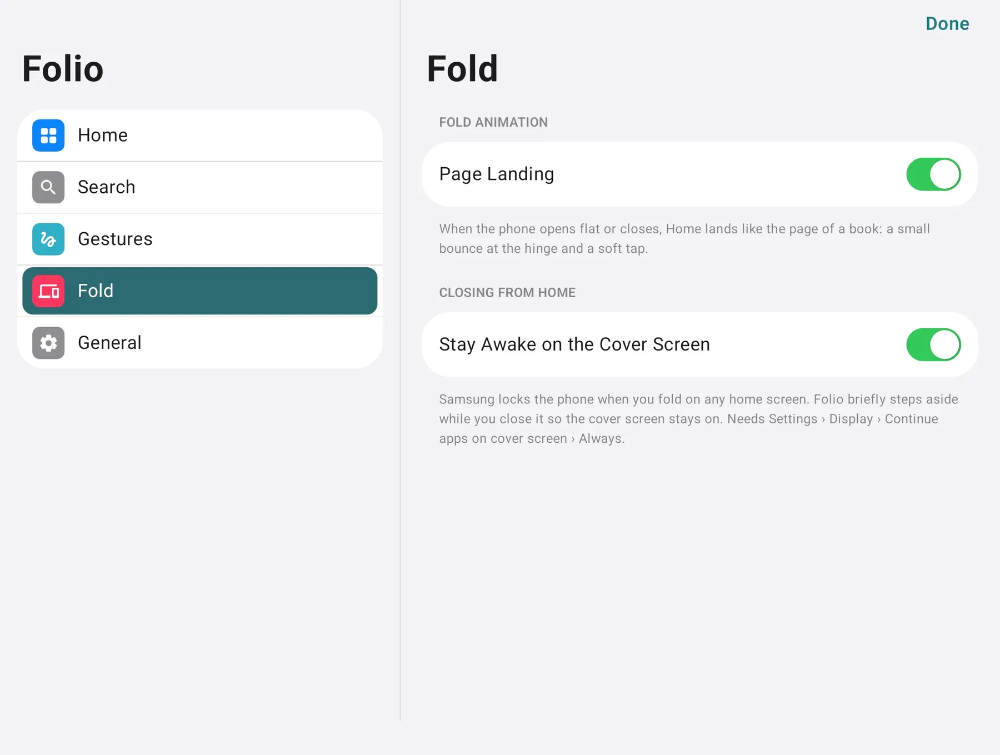

The Side Bar.
The time, a battery ring and your dock stand in a glass column along the edge, folded or open.

Twofold: Foldable Launcher
The two-panel Home screen from all those concept renders, on the foldable you already own. Made first for the Galaxy Z Fold8, and just as at home on phones and tablets.
One purchase · No ads · No account · Open source

The time, a battery ring and your dock stand in a glass column along the edge, folded or open.
Every app, sorted into categories for you, with search at the top. No drawer to tidy.

Frosted panels lit from one light above Home, edges that glint on two corners, and icons with real depth.
Swipe through a stack in place, pick Small, Medium or Large from the gallery, and keep a whole page of widgets beside Home.
Hold Home and the icons start to wiggle. Drag them anywhere, drop one on another to make a folder, and tap + for widgets.
Open your foldable flat or close it, and Home settles like the page of a book: a small bounce at the hinge and a soft tap. Both screens share one layout.
Swipe down or tap the round button for apps, contacts, settings, quick math and the web.

Light, grouped and short. The same corners and springs run through every screen, and where a choice can be made once, Twofold makes it, so Settings fits on five pages.

Twofold doesn't ask Android for internet access at all. Your layout, settings and suggestions never leave the device.
Install it, set it as Home, done. Nothing to sign in to.
Nothing is tracked, counted or sold.
Every optional permission says what it's for before you grant it. Twofold works without any of them.
Every line of Twofold is on GitHub under the MIT license. Buying it on Google Play gets you signed builds and updates; building it yourself is free.
Twofold was made first for the Galaxy Z Fold8 and works on other Android foldables, phones and tablets running Android 12 or later.
Twofold is a one-time purchase on Google Play, with no ads, subscriptions or in-app purchases. The source code is MIT licensed, so you can also build it yourself for free.
None to get started. Notification access adds badges, the gestures service opens notifications and Quick Settings from Home, usage access improves suggestions, and contacts and calendar power search and the Up Next widget. Each one is explained before you grant it. See every permission.
No. Twofold is your Home screen only. Android keeps the lock screen, recents, notifications and Quick Settings.
Open Android's Settings, go to Apps, then Default apps, and choose another Home app. Your Twofold layout stays put if you come back.